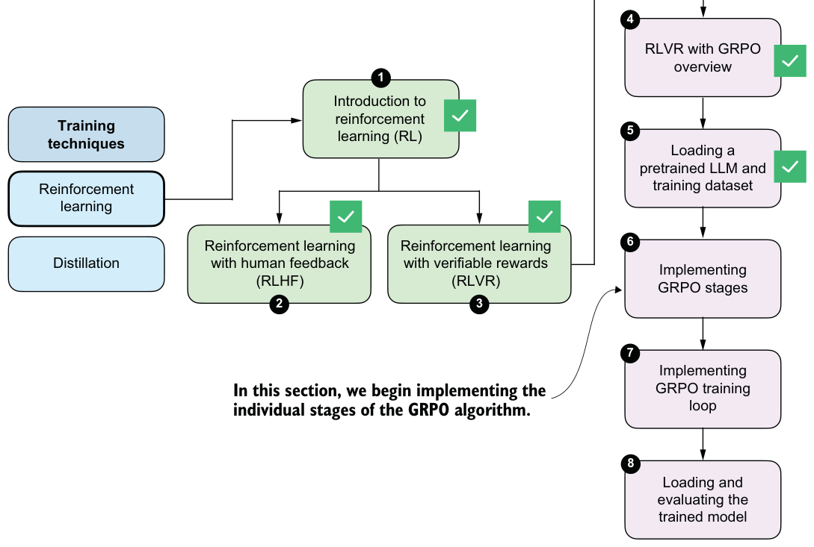
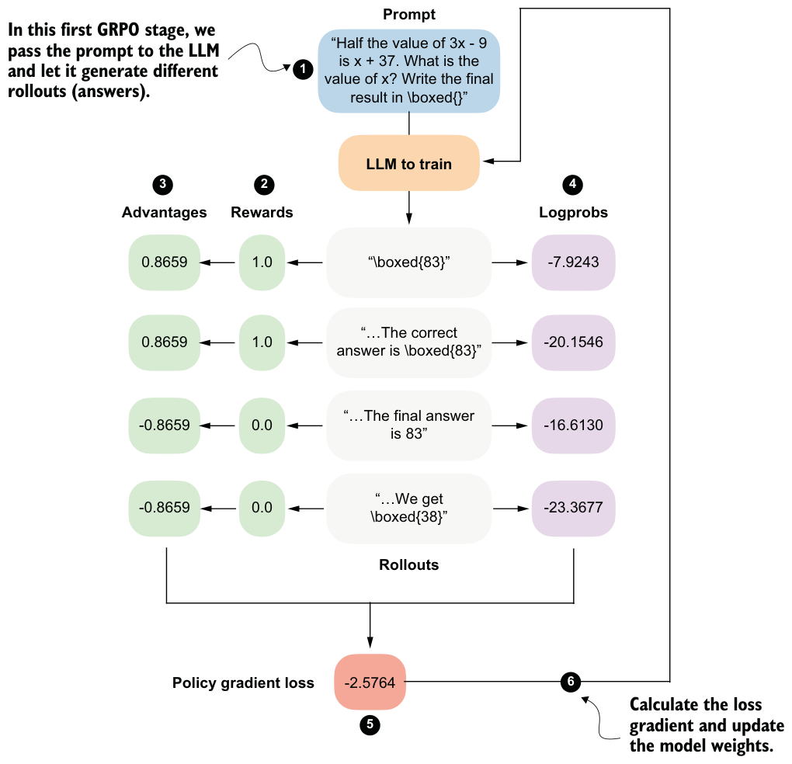
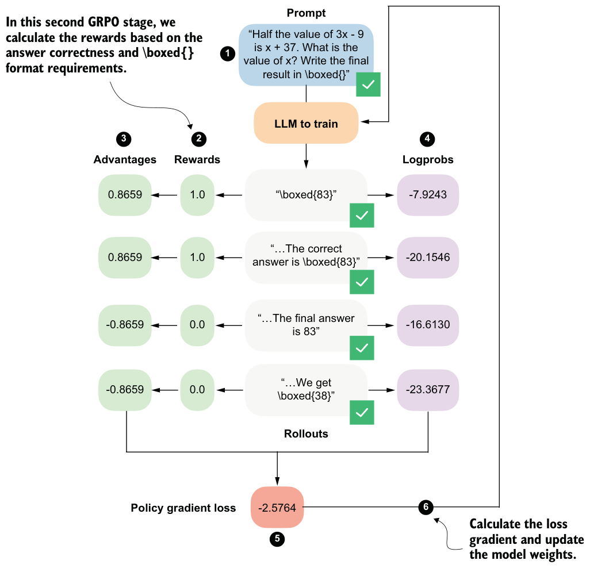

6.5Sampling rollouts
Now that we’ve set up the pretrained base model and loaded the dataset, we are ready to implement the GRPO stages, as illustrated in figure 6.12.

Figure 6.13 revisits the GRPO overview we introduced earlier in a simplified form that omits the KL loss term, short for Kullback-Leibler divergence loss. We’ll add it in the next chapter. We can think of the KL loss as a penalty term that discourages the updated model from drifting too far from a reference model. Figure 6.13 will serve as a simplified road map that we can refer to as we step through the algorithm’s components.

As shown in figure 6.13, we’ll first use the LLM to generate multiple rollouts. Here, rollout is an RL term that simply refers to a complete answer generated by the model for a given prompt.
We could reuse the generate_text_stream_concat_flex function from listing 6.2 to generate the rollouts. When we defined that function earlier, though, we decorated it with @inference_mode, which disables several PyTorch features for efficiency. Since we will later perform a backward pass, @inference_mode makes the function incompatible with our training setup. (Here, “backward pass” refers to the step where PyTorch computes gradients from the loss so that the optimizer can update the model weights.) Instead, we need the @torch.no_grad decorator, which disables gradient tracking during the forward pass without switching PyTorch into inference-only mode.
Let’s rewrite the function in a more compact form and call it sample_response. This function will generate the same text as generate_text_stream_concat_flex(...,
generate_func=generate_text_top_p_stream_cache). We can verify this by observingthat, with the same random_seed, temperature, and top_p settings, both functions produce identical responses.
from reasoning_from_scratch.qwen3 import KVCache
from reasoning_from_scratch.ch04 import top_p_filter
@torch.no_grad()
def sample_response(
model,
tokenizer,
prompt,
device,
max_new_tokens=512,
temperature=0.8,
top_p=0.9,
):
input_ids = torch.tensor(
tokenizer.encode(prompt),
device=device
)
cache = KVCache(n_layers=model.cfg["n_layers"])
model.reset_kv_cache()
logits = model(input_ids.unsqueeze(0), cache=cache)[:, -1]
generated = []
for _ in range(max_new_tokens):
if temperature and temperature != 1.0:
logits = logits / temperature
probas = torch.softmax(logits, dim=-1)
probas = top_p_filter(probas, top_p)
next_token = torch.multinomial(
probas.cpu(), num_samples=1
).to(device)
token_id = next_token.item()
generated.append(token_id)
if (
tokenizer.eos_token_id is not None
and token_id == tokenizer.eos_token_id
):
break
logits = model(next_token, cache=cache)[:, -1]
full_token_ids = torch.cat(
[input_ids,
torch.tensor(generated, device=device, dtype=input_ids.dtype),]
)
return full_token_ids, input_ids.numel(), tokenizer.decode(generated)Note that the function now also returns the token IDs of the prompt plus answer tokens, the number of tokens (input_ids.numel()), and the answer text (tokenizer.decode(generated)). Returning these will allow us to simplify several downstream functions later on.
Otherwise, there is nothing new here. The code is simply a leaner version of what we developed previously; it combines the generate_text_basic_stream_cache function from chapter 2 directly with temperature and top-p sampling from chapter 4.
Next, we’ll call the function on an example prompt, similar to listing 6.2.
torch.manual_seed(0)
raw_prompt = (
"Half the value of $3x-9$ is $x+37$. "
"What is the value of $x$?"
)
prompt = render_prompt(raw_prompt)
token_ids, prompt_len, answer_text = sample_response(
model=model,
tokenizer=tokenizer,
prompt=prompt,
device=device,
max_new_tokens=512,
temperature=0.9,
top_p=0.9,
)
print(answer_text)Previously, the generate_text_stream_concat_flex sampling function returned" \boxed{58}". Now the sample_response function explicitly includes the end-of-sequence token in its response: " \boxed{58}<|endoftext|>". Including this <|endoftext|> token is not strictly necessary, but it prevents the model from unlearning how to generate end-of-sequence tokens during very long training runs.
We could call sample_response multiple times to generate different rollouts, and we will do this later when implementing the full training loop. To keep this GRPO walk-through example simple and make it easier to follow the step-by-step GRPO outline in figure 6.13, we’ll instead assume that the model produced the following four short responses:
rollouts = [
r"\boxed{83}",
r"The correct answer is \boxed{83}",
r"The final answer is 83",
r"We get \boxed{38}",
]6.6Calculating rewards
The second stage of the GRPO procedure involves computing rewards for each rollout, as shown in figure 6.14.

The rewards are computed using the math verifier from chapter 3, and they’re primarily based on answer correctness. By setting fallback=None in the reward_rlvr function in the following listing, we also include an implicit format constraint. For instance, an answer only receives a reward of 1.0 if it is both correct and expressed in the required
\boxed{} format.from reasoning_from_scratch.ch03 import (
extract_final_candidate, grade_answer
)
def reward_rlvr(answer_text, ground_truth):
extracted = extract_final_candidate(
answer_text, fallback=None
)
if not extracted:
return 0.0
correct = grade_answer(extracted, ground_truth)
return float(correct)Since the model receives a nonzero reward only if it answers correctly and writes the final answer in the \boxed{} format, we encourage it to learn to produce correct and properly formatted answers.
Let’s give the reward_rlvr function a try and apply it to the rollouts.
rollout_rewards = []
for answer in rollouts:
reward = reward_rlvr(answer_text=answer, ground_truth="83")
print(f"Answer: {answer!r}")
print(f"Reward: {reward}\n")
rollout_rewards.append(reward)The resulting outputs are as follows:
Answer: '\\boxed{83}'
Reward: 1.0
Answer: 'The correct answer is \\boxed{83}'
Reward: 1.0
Answer: 'The final answer is 83'
Reward: 0.0
Answer: 'We get \\boxed{38}'
Reward: 0.0As you can see, the reward function works as intended and only provides a reward of 1.0 if the answer contains the correct result (83) and uses the \boxed{} format.
Note that the DeepSeek-R1 team also tried to use process reward models to score intermediate solution steps during training. These attempts were unsuccessful, and the researchers concluded that it is better to train only on final-answer correctness rewards, without intermediate rewards.
Exercise 6.1: Adding format-aware reward shaping
reward_rlvr function from this chapter so that it assigns partial credit based on output format. Specifically, modify the reward function so that it returns 1.0 if the model produces the correct answer in the required \boxed{} format, 0.5 if the answer is correct but not boxed, and 0.0 otherwise.